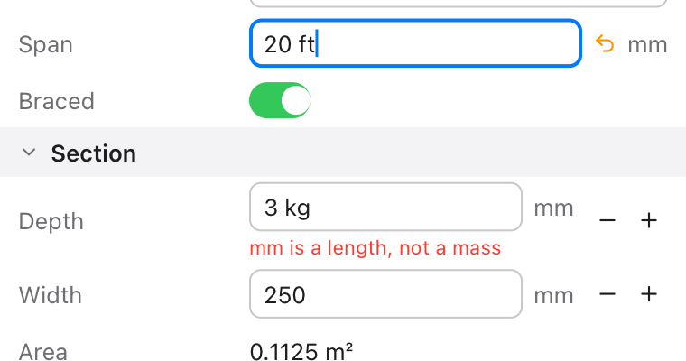

Sums and units in number fields
Type 20 ft in a field in mm, or 6 m + 250, and Enter gives 6096 or 6250. A unit that doesn't fit is a message, not a wrong number. The arrow shows what's typed but not applied yet. Fields are read by the units library.
inspector.NumberRow("Span", value: beam.span, unit: "mm", decimals: 0, min: 0.0)